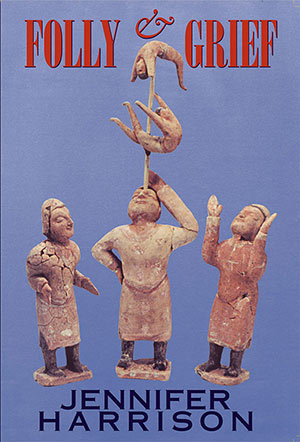

|
Folly and Grief : Jennifer Harrison |
||||
 |

Book Description and here are the things I carry:
a silver bell, a desk, a lock of hair; some laurel flowers, a lantern, a bonbonniere, three scarves, a black cat, a peacock, a box of rain, a streak of lightning, a ladder, a pipe, a coffin, a fan, a pumpkin, a skull, a book of law. Like her funambulist, Jennifer Harrison produces from her new book Folly & Grief a bag of miracles. Her care for the language and her revelling in it, alerts us: we are in the presence of a poet whose work is ravishing. In a tumble of life she introduces us to a ceramic tea cup maker outside the Taj Mahal, a chainsaw juggler, a sculptor in bees, a book sculptor, human statues, objects in house or museum, street and theatre performers and, tellingly, herself. Each actor and line is vibrant. Individual poems hover like fables. Then, in the diary-like title sequences, she doubts and re-affirms her art. Folly & Grief offers us what poetry should: beauty under pressure. ...immense compassion and
razor-sharp observation, dark under-edges and disturbing beauty.
Ian
McBryde, Five Bells
ISBN 1876044454 Published 2006 133 pgs |
||||
Book Sample
Reviews
Folly & Grief Jen Jewel Brown Blue Dog, Vol. 6, No. 12 December 2007 Like the bones of a
skeleton, the poems in Jennifer Harrison’s fourth book Folly & Grief
fit together perfectly. Here, performing artists - buskers, street
carnies, fakirs and other spell-binders - are captured like fantastical
things in the jars of an old world apocethary’s shop.
Plain-speaking,
contemporary yet linked through its subject matter to medieval and
sometimes macabre roots, the book is loaded with atmosphere and portent.
Running to a generous 133 pages, Folly & Grief was launched to a packed room of around 500 at the Melbourne Writers Festival last winter (2006). It immediately sold out, making the Readings festival tent bestseller list, which was subsequently printed in The Age. This is the kind of splash those of us who treasure poetry are reassured to see. Folly & Grief marks the writer’s escalating skills and confidence. Comparing it to her first - the Anne Elder Award-winning Michelangelo’s Prisoners (Black Pepper, 1994), written in her mid-30’s - I recognise the same signature use of medical terms (the poet’s day-to-day work is as a psychiatrist) and expansive vocabulary. In both these books - and also in Cabramatta/Cudmirrah (1996) and Dear B, short-listed for the 1999 Age Book of the Year and the NSW Premier’s Award - I met a deep and lateral thinker, well armed to deal with labyrinthine and disturbing ideas. Other poets are more radical; sure. Harrison is no Ern Malley, prepared to scissor up her library. Increasing maturity, however, has ushered in an easier grace of expression; a more accessible and economic style. No loss in sophistication is sustained, however. If anything, Harrison’s work gains impact in the paring back. The poems in Folly & Grief, often arranged in neat sets of two or three lines down a single page, strike straight at the imagination. Here (in ‘Ringmaster’, p.7) the poet explains what she’s up to: I went inside the grass smell
of a tent to recall the desires of a child hunched over games, five knucklebones landing lightly on the back of her hand. Mannequins pinned to the high trapeze glitter like sparklers in grass but I went inside the rough sketch of a woman to find the dice’s grace – to find hail drubbing on an old Zephyr sedan a ringmaster’s whip scything the air. I went to the circus to take charge; to remove blouse after blouse. As
she enters a circus tent in ‘Ringmaster’, the
captured smell of grass
triggers an early childhood memory for the poet, writing in the
unselfconscious first person. She recalls her early competitive
‘desires’ to win the ancient (performative) game of
jacks, using
knucklebones. Then ‘Mannequins pinned to the high trapeze/
glitter like
sparklers in the grass.’ All the sibilance, the assonance and
the three
‘in’ sounds build the dazzling edginess and
invitational qualities of
the scene.
The simile of the sparklers in the glass introduces a second image of early childhood entertainment. Repeating the phrase Harrison adds another, more surreal layer: ‘I went inside,’‘I went inside the rough sketch of a woman / to find the dice’s grace.’ Here the child grows into a teenager; a young woman exploring her chances in the world. She looks inside herself and confronts the enormity of her luck. ‘I went to the circus to take charge / to remove blouse after blouse.’ As creator, Harrison can cut through the layers of illusion with her ‘scythe’ – her poet’s insight - and reveal the truth. Some landmark poems are collected here. ‘The Lovely Utterly Cold Snow’ (p. 31) appeared in the fifth and, sadly, final outing of the important poetry anthology series Salt-lick, amongst other places. The poem is subtitled ‘Melbourne Writers Festival, 2003’, an event where one chair was kept empty at each session: a piety
to remind this noisy church of words of the elsewhere voices… that dress, that land that skirt that milk leaking from a swollen bowl its clay cracked by a sword – Is memory then the soul? and grief a claustrophobic space where nothing tastes of grammar’s lovely utterly cold snow? The
poem, recognizing the festival writers as themselves a kind of literary
sideshow alley, shows Harrison at her compassionate best. The second
Gulf War had just begun. The ninth anniversary of the machete genocide
in Rwanda had not long passed. Third world writers were largely absent
ghosts as Harrison starred at The Malthouse in ‘this noisy
church of
words.’
The missing words of the lost writers were ‘…milk leaking from a swollen bowl’ – an image that seems to strike at the breast of motherhood – ‘its clay cracked by a sword.’ ‘Is memory then the soul?’ she asks. A confounding question. But who wouldn’t recognize the metaphor of ‘grief [as] a claustrophobic space?’ And surely it takes eerie talent to think of calling grammar a ‘lovely utterly cold snow.’ Death is a regular shadow presence in Harrison’s writing. ‘Hand, Chainsaw and Head’ (p. 30), gleaned from a family trip to the Mortlake Buskers’ Festival, describes a very contemporary act which harks back, with the blackest of humours, to more ancient ‘entertainments’: He juggles a chainsaw, a rubber
hand and plastic head
the ghoulish toys of Quake’s dark alphabet – Widow Maker, Skull Splitter, Brain Biter – old Nordic weapons – their names too, might find a place in his Mortlake armoury. The day is sodden, and grey – even the fine patinating rain feels like sprayed blood on my face and lips... The
words themselves – ‘Widow Maker, Skull Splitter,
Brain Biter’ – are
full of consonance and teeth-baring demands to be read aloud. The rain
is ‘patinating;’ its onomatopoeia as pretty as it
is gruesome. And
because all performance is intrinsically a feedback loop between artist
and audience, Harrison’s divining rod of interpretation
illuminates far
more than her initial point of focus. She even experiences the light
rain hitting her as blood.
The poem gathers menace. The narrator’s bored children are momentarily roused by the chainsaw’s kick-start roar as it’s juggled on a wet road. As she drives home from Mortlake – (even that place name contains the French word mort, death), they mumble in their sleep in the back of the car while she is seduced by every fragment of experience – the sky ‘falls thick as silk,’ a star ominously ‘drags the ceiling of a cloud.’ Her radio cuts out as ‘laden lorries sweep past like mescaline thunder.’ Tying off the poem with a surgeon’s precision, Harrison closes the metaphor. Now, charged with motherhood, she is the one juggling destructive weapons; I juggle a machine, the mist and
the night – the road thinner
darker… Waiting to be entertained, the landscape leans in – watching. And she has been supplanted by the landscape in the voyeur’s role. Other
poems carry indelible lines like ‘just long enough to know
how the runt
feels / on the outskirts of the litter’ (’The
Ferris Wheel’, pg. 107);
‘this night wrecking itself on a reef of guitars’
(‘Fort Fairy Folk
Festival’, (pg. 101) and ‘I rust as you
sleep’ (‘Rust’, pg.73). I await
Harrison’s next collection with great interest, just as I
salute her as
the true ringmaster of Folly
& Grief.
Reference: Salt-lick New Poetry, Volume 5, August 2005. Folly & Grief Petra White Blast, Issue No. 6, September 2007
Jennifer Harrison has been marked from her first book, Michelangelo’s
Prisoners (1995), as a poet who works at full pitch with a
scientific
and philosophical scope (she is a medical doctor) - and with skilled
imagination. Three books later, Folly
& Grief is her most ambitious
and accomplished. Her books approximate to the livre composé,
and a
discernible ‘theme’ in the new book is in the
intermittent tropes of
street performers - a well-established poetic tradition that takes in
Baudelaire and Rilke. As with her predecessors, Harrison’s
figures are
most interesting for how their gestures are spaciously transparent to
the poet’s sense of humanity. At times, they are fellow
travellers in a
serious quest for survival and grace in the face of loss and transience.
In ‘The Audience’, the steadiness of a juggler on a unicyde exposes his unstable onlookers, drifting ‘like Piiz in the shadow’s cumin / in search of the present’. For Harrison, the present is a layered and shifting affair, constantly requiring new ways of finding balance and of warding off delusion. Not least among her muses is that ultimate trickster, memory. Folly & Grief, as its title might suggest, is a memory-laden book, but Harrison doesn’t privilege memory as a source of truth or epiphany; she offers us no madeleine cakes. While many of the poems place emphasis on objects - ‘Funambulist’, for example: ‘and here are the things I carry: / a silver bell, a desk, a lock of hair, / some laurel flowers, a lantern’ - these may be keepsakes, or tools of the magician, or accoutrements of the writer (the desk). This drum-roll poem is on the first page, announcing a poetry that is prepared to juggle anything; and a poet who holds nothing sacred, whose vision both accommodates and challenges. ‘The Ferris Wheel’ takes what might be a conventional childhood memory and offers instead a complex splicing of perspectives. There is ‘a sense of memory mined / as though you’ve almost reached beyond yourself / and a fibro shack lurks always behind’. The ‘lurking’ shack is faintly shocking here, both stabilising and unsettling. The future looms with ‘scientists repairing the daisy-chained genes. / The fear of what we will fix’. Nostalgia for a particular kind of childhood is balanced by a genuine interest in the workings of the mind itself, and the voices of the carefree child and the anxious, world-and-self-aware adult are wonderfully combined: ‘Be careful now, or you’ll see only plywood, / the wheel as a vicious, ruinous form’. The stunning ‘Fauna of Mirrors’ is in some ways a re-casting of Judith Wright’s ‘Naked Girl and Mirror’. Whereas Wright uses the mirror to come to terms with a changed self (‘This is not I. I had no body once’), Harrison is as interested in what the mirror does. The mirror itself is a locus of change and trickery, shiftily containing the gazer’s whole past. Body, self and mirror can all be ‘smashed’; Harrison repairs: ‘The breast and the belly, the man-wetted thigh: / their fragments and half-promises can’t haunt a woman / who has conquered the distance between her eye and the light.’ If there is a hint of bravado in ‘What luck / to be confronted, daily, by the mirror’s radical memory / its freedom to invent’, ‘luck’ and ‘daily’ suggest that nothing may be taken for granted. Often, Harrison’s uses of the magical or surreal are to explore a heightened awareness brought about by grief or loss. In ‘Pippying’ the sight of a woman on the beach ‘wading, her dress slapping the sea’ opens up a memory that isn’t exactly lost, and a time that hasn’t ended as such. There is something of the annihilation/preservation of Ovidian metamorphosis: ‘But it wasn’t long ago we pitched a tent in the sand / and slept in our clothes the way trees do’. The woman disappears: ‘all I recall is that when night fell, I saw / stars fill the darkness where her heels had left a hole.’ This is quietly exhilarating, flashing sibilants giving way to pausing outbreath h’s: ‘her heels had left a hole’. The mystery of absence and forgetting reveals something larger than the self. One of the two long title sequences, ‘Grief’, relates partly to cancer: ‘the sky’s blue mastectomy... chemotherapy’s caress of neon / the privacy of blood / the young bald girl / selects the wig she will not wear’. It is a journey poem, not through or into grief, but with it: ‘this is where grief / begins: in a rainforest / opened by machines / ...a red earth road / leading away from the known’. Both the ‘Folly’ and ‘Grief’ sequences are remarkable for their momentum of mind, unpacking and releasing the suitcases of imagery piled up elsewhere in poems like ‘Funambulist’. ‘Folly’, more surreal, is a dream-journey through moonlight and rivers, as well as through such daylight spaces as the hardware store and the art gallery. There is a haiku-like concentration (‘a string of light rising / through the lake’s handbag of fish’). ‘Folly’ does not yield easily to the reader; it persists into a compelling strangeness, unafraid of ambiguity. This is how good poetry can be; and here, as elsewhere in Folly & Grief, Harrison shows that she has the poetic resources to keep the reader with her. Folly & Grief Heather Taylor Johnson Wet Ink, Issue 6, Autumn 2007 It will take more than a
few long
bubble baths and glasses of cab sav to get through Jennifer
Harrison’s latest book of poems, Folly & Grief.
This one hundred and twenty seven page collection is rich with images
and character sketches, linguistically challenging and highly complex
overall. Though it appears slight to medium in volume, it is extremely
dense. In it, Harrison examines the secret worlds of jugglers and
mimes, gets lost in the audience or becomes part of the music at folk
festivals, imagines paintings coming to life and exonerates the beauty
of the Taj Mahal, a china bowl or Changzhuo’s face covered in
bees. She is both a keen observer and avid storyteller, squeezing life
from magic, memory, smirks, melancholy, music, silence and colours.
This is highly crafted poetry. Harrison’s precision is almost
intimidating at the best of times:
I
can’t tell where I’m going
but shall I memorise the shape of streets the slope of bridges, the vertigo? today I’m carried somewhere new - I’m lost, in pieces, and I rattle the smell of camphor (my skull, cedar from Cameroon) - I remember silt in my mouth eyes dredged from a factory when a light wind blew, my hair moved ‘Ventriloquist’s dummy’ This is a woman who
loves words.
Though at times I wonder if she might love them too much. I ask myself,
can a poet place too much emphasis on the brilliance of a single word?
And in the case of Harrison, can there be too many words in one single
stanza which shine so brightly that the whole of the image becomes
blurry? Too much brilliance, too much brightness, can be blinding,
after all. But I am not convinced that this is a bad thing. In the
overall scheme of Folly
& Grief,
becoming lost and having to re-read (if meaning is your motive) is only
slightly distracting. Truly it is more seductive, like a drug that
sneaks up on you then settles on in. The disorientation is simply part
of the package and ultimately of no real concern. What matters is the
way it makes you feel.
Back to top Folly & Grief Janet Upcher Island, No. 107, Summer 2006 The cover of this collection, representing a group of ceramic acrobats from the Northern Wei Period, is a tantalising invitation to explore further. Harrison’s verbal acrobatics are equally tantalising, sometimes dazzling, at times mystifying and esoteric. There are poems here which resonate; there are others which, like any acrobat, risk falling flat. Her dalliance with wordplay can be oblique and annoyingly self-conscious (‘I angle through my own semantics’, ‘Folly’) but shows her awareness of the traps in artistic expression and her courage in pursuing the risks. Despite its universality, its strange appeal as a gallery for jugglers, magicians, buskers, acrobats and eccentrics, the collection nevertheless has a distinctly ‘Melbourne’ feel to it; one senses that Harrison is trying to shake off a middle-class legacy via her disconcertingly honest, almost disdainful view of the ‘comfortably numb’: ‘...the blank TV screen / has the soft, dull glow of a woman lost / inside the silk of her home’, ‘Model Home - With Stick Figure’. ‘Lucky Rich’ also reveals simple, yet powerful imagery: ‘I notice the sea’s wilderness / the minty breath of pines / ...I find my feet where love I sucks. I find my swim looking up. / All day too. Along sunset’s burning claw.’ Two of the most effective poems deal with the tangible and intangible, visible and invisible: ‘Golden Sadness’ with its poignant, starkly honest comment on physical relationships and ‘The Shark’ where ‘Dawn slinks like a cat / along the sky’s spine’, making visible ‘the giant shadow / ... beneath the slicing silver fin.’ And finally, there is the powerful title sequence, ‘Grief ‘, with its fearless scrutiny of mortality. The imagery conveying individual isolation and the menace evoked by ‘chemotherapy’s caress of neon’ is striking. In a memorable, unified poetic sequence, Harrison explores ‘where grief begins’. Through startling metaphors, she manages to avoid sentimentality, subtly underscoring the fragility, the transience of things and people, one minute here, the next minute gone: are we all toys at the mercy of a magician, a juggler? Is survival merely a question of sleight of hand? Are we all merely acrobats in a crazy circus/cosmos? Such questions, it seems, have made her look more sharply, more incisively at the visible world, thereby revealing more of the invisible, the things rarely seen beneath the surface. Some of her images have a heightened sensibility which makes them unforgettable and poignant: ‘in the trees on Chapel Street / sparrows thrill and ripple / their small brown arias raining down / twilight in a seizure of song’. With such power in this sequence, one wonders whether other parts of the collection might have gained from more savage editing, more selectivity. Back to top Folly & Grief Martin Duwell Australian Poetry Review - 1/2/2007 One of the features of
Jennifer Harrison’s work is the way that the themes are
consistent and the styles change. Folly
& Grief
is, quite simply, a brilliant book. To get a sense of what it is doing
and where it is positioned, though, it is more than helpful to look at
her previous work. Her first book, Michelangelo’s
Prisoners
(published in 1994), began with a group of poems about the body which
position the author both as external analyser and participant; that is
as body-owner. The first poem, ‘Imaging the Brain’,
looks
at that unknowable entity in terms of the traces it leaves, one of
which is the very poem we are reading:
The scan declares a brain is free
Of tumour or haemorrhage But doesn’t comment on the mind’s possibility. Idle, industrious, the faint white streamers Which streak the filmy cortex Must be sentences. Other poems (such as ‘Cancer Poem’, ‘Chemotherapy’, ‘Outrider’ and the title poem) seem based on a personal experience of the body going wrong and so have a less-removed, occasionally nightmarish quality. Nevertheless they are still defiantly analytical in mode. The second section of Michelangelo’s Prisoners is called ‘The Sea’. Here, especially in the last poems, it foreshadows the next book, Cabramatta/Cudmirrah. The central poem of this section is a sequence of seven sonnets called ‘Maturana Songs’. It is central because the biologist/epistemologist figure which it celebrates provides a philosophy which seems to underpin much of Harrison’s work. Since Maturana’s work gravitates towards the image of ‘drift’ for the way in which human and non-human systems inhabit an environment, we can expect that seas in Harrison’s work will never be simply seas. Insofar as the sea is opposed to the body then it does inevitably symbolize the mind but the conventionality of this image (with its attendant symbols of fishing, drifting etc.) is complicated by the addition of the idea that it also represents the medium that we inhabit and never control. If each observation is a system
each thought an adaptation, then we drift upon a spacious sea. Slippery meanings flash through weeds... So the sea poems at the end of Michelangelo’s Prisoners, like those in Cabramatta/Cudmirah, have a decidedly equivocal quality: they describe a medium which can represent the brain, the house of memories and creativity, but which can also represent a kind of primal medium out of which observers produce what they imagine to be solid ‘objects’ and experiences but which don’t in fact have any ‘objective’ status though they do serve to obscure the fact that they have been created. It recalls Tarkovsky’s Solaris though that wonderful film never appears in any Harrison poem that I know. To put it mildly, a lot of things are happening when this poet goes down to the sea. Cabramatta/Cudmirah is a book of memories: the titular suburb and coastal town being the twin poles of the poet’s upbringing. But memory for Harrison is far more than the re-creation of old, loved places. The first section is obsessed by fast travel and roads, symbols of the passage of time, and makes no bones about its interest in the very act of observation: but this isn’t how you
remember it
now that the highway by-passes everything that is ordinary you see only the ordinary invisibility of speed you are unsure which cows are trees, which trees are people the anabolic blur flattens the lot until you are driving fast into your own history and digging deep into the eye within which is the only place you see it The second section takes us back to the sea which is looked at through all the possible symbolic filters. It is the medium, it is also process, the natural world, the unconscious mind, the meaning-laden underside of a poem, and all human bodily fluids. There are two major human figures: a wise gypsy and a grandmother. Since the latter is suffering from Alzheimers she is a place where memory is slipping into the dark and her character is the reverse of the poet who pulls memories into the poems. Poetry is always responsive to this central human dilemma: the almost infinite details of life (the exact call of the local currawongs outside my study as I write this, for example) slip continuously into the irretrievable. Those things that are retrieved - chance items in a vast shipwreck - can be fixed in a poem but they do no more than remind us of the enormity of what has been lost. At any rate, one of poetry’s functions is to be aware of its power to fix: as Yeats says in ‘Easter 1916’, ‘I write it out in a verse’ and that poem celebrates poetry’s transforming power while seeming to record a transformation wrought by political commitment. One of Harrison’s poems, ‘Thermocline’, sets up a three-layered sea. There is the surface (the world of phenomena), the deep ocean (the world of forgetting), and between them the thermocline where memories are preserved and have an influence on the waves and currents of the surface. It seems schematic but it is a good poem: Lying between the
eye’s horizon
and the eye’s blindness the thermocline hoards memories that do not fade for without light, without heat the sea would be an infinite homogenous forgetting. Cudmirrah Shoalhaven Swan Lake Ulladulla. Waves are never one colour - they inhabit space not place - they’re in the sea’s lung then they’re out in the open mouthing the smoke of Bherwherre - then they curve to the shore taking the ship’s dog with them. Girls lie nearby rubbing hot-noonday suns into their skin’s cool echo. I must think of the wave as a diary. Scarcely daring to read what I have written the day before in case I edit what I mean. There are enough surprises here to overcome the schematic quality. I like the unexpected ending and I really like the listing of the towns in the middle - it is as though a list will re-establish the power of the poem to fix particulars. Another poem, ‘Sea Eagles’, seems to suggest that a list of remembered items can have an incantatory quality as though each object became sacred: See grandmother - we
are recording the swimmer the cry, the unexplored X, coloured red meaning this is where we will go without finding the village of strange implements and boasts. There is a way of touching the dreams of another of calling when you have no voice. We make a tower from sticks and hang it with feathers, funeral stones rubber thongs, whelks, a wind-chime. There is a lot that is relevant to Folly & Grief in that image. Poets develop and change in their own ways and are not required to please their readers, but it is hard not to think of Dear B as a disappointing book. The bulk of the poems seem extremely gnomic and don’t - unlike the poems of the first two books - suggest approaches that a reader might take. What are we to make, for example, of ‘Husk’? Your nervous heart insists
that lightness makes sense of grace that boneless time weighs the seed and spills its morse as choreography now prisoner stammering in the breathless crevice - fly fly across flagstones: smooth tumbling brief - pinned now to the ragged branch you disappear longing to see. Yes it is about the seed which carries its plant’s DNA across cracks in stone and paving and ends up in a tree and it is also about the heart’s desire to approve of the weightlessness of the seed but it is hard to determine the poet’s stake in all this: what makes it a necessary poem instead of a merely incidental one. The same could be said of the bulk of the poems in the book although occasionally, in poems like ‘Local Astronomy’ and ‘A Serious Case’, familiar themes (memory, system-identity) push through. And the poems are not necessarily bad. Everything I have said in a way applies to ‘Out of Body Experience’ which is, in its own way, a tour de force: Last night I lay above myself in
the dark
looking down upon a stranger beside him. Momentarily, in the moonlight, she was that person I am no more, the one seen from far away who cannot be regained or changed and whom the dawn will not unite. The two women who lie awake beside him cannot speak or touch each other. One is made of earth and blood, the other of air and moon-frost. All the night between them is past and future night so that everything I have done, everything she watches becomes a memory, now passing as I sleep and wake outside her, inside myself, beside him. The brilliant opening works by quickly and unexpectedly introducing a third person as a kind of marker point so that the spectral self looks down on ‘a stranger beside him’. But even this poem despite its personal theme has an impersonal quality, almost as though its ideal housing would be some kind of anthology where poems don’t need to be read through their individual author’s obsessions and thematic and stylistic quirks. And so to Folly & Grief. At the simplest level we can see that, like the first two books it is in two parts. It is also a long book, each of the parts being as long as a conventional book of poetry. Each section ends with a diary-like poem that represents something that is, as far as I can see, new in Harrison’s work - though Dear B does contain a diary section in one of its longer sequences. But the overwhelming impression that a first reading of Folly & Grief makes is of the almost all-encompassing symbolic set-up built around commedia dell’arte, mime, clowning and funambulism. You can get the wrong initial impression - as I did - that this is a kind of got-up research project that a poet might put to an arts-funding body: promising to write a sequence about the circus world. In fact the obsessions of the earlier books are here and the magic of Folly & Grief is that these obsessions find a natural, logical home in the world of the clown and the mime. In fact the nature of these obsessions becomes so much clearer when they are opened out, so to speak, into a different symbolic realm. When discussing the earlier books, I have already spoken about the features of memory and the way a poem can fix them. Sometimes these memories actually are embedded in objects inherited and kept. It is no accident that the word ‘heirloom’ occurs so frequently in Harrison’s poetry. We meet these pregnant objects in the first poem of Folly & Grief, ‘Funambulist’. Coins fill the
busker’s hat;
it’s true, a thief will steal from the blind. Satellites spin delicate journeys in the woods above. Space the guestroom we never had. Malleable, down below, in the mute neon between streets, we’ve touched only the details of maps. Believing ourselves beamed upon, we script new mercy themes and here are the things I carry: a silver bell, a desk, a lock of hair, some laurel flowers, a lantern, a bonbonnière, three scarves, a black cat, a peacock, a box of rain, a streak of lightning, a ladder, a pipe, a coffin, a fan, a pumpkin, a skull, a book of law. Believing myself beamed upon, I carry one clap of thunder, some shrimps and a globe, a bag of nails, a carton of crème, a rolypoly of doves. I carry the city, the cleft mirror, the faked fight of the fist on the drum. Part of the magic of this initially strange poem is its movement into list. Instead of fixing one item by focusing on it, it provides a list which suggests the infinite number of possible items for the character to carry and, at the same time, takes over the poem: a really fascinating structure. The list itself is an abbreviated version of the one provided in Kay Dick’s history, Pierrot, as an account of the property of the greatest of the Pierrots, Gaspard Deburau, who flourished in Paris in the first half of the nineteenth century. It is tempting to look back to the idealist position of Maturana and to begin to make symbolic connections. If the world of objects is essentially illusory then what better expression of this could be found than the world of fixed-role comedians and, above all, mime. I think it would be reductive to see this as the essential principle behind the poems of the book but at the least it can be said that the circus world is one whose thematic possibilities chime well with poet’s obsessions. ‘Ringmaster’, for example, is the monologue of a character reluctant to be a mere clown, one who wants to seize the key to Rimbaud’s ‘barbarous sideshow’: But I went inside the rough
sketch of a woman
to find the dice’s grace - to find hail drubbing on an old Zephyr sedan a ringmaster’s whip scything the air. I went to the circus to take charge; to remove blouse after blouse. I went alone because to master the sanded weights a juggler first conquers clumsiness then writes the same poem, over and over. Sometimes it is possible for the power of memory-objects to be overwhelming. The first prose poem of ‘The Feminine Sublime: Two Briquettes’ treats heirlooms as dangerous: Should I open this pressed metal trunk with a surface like crocodile skin - should I fall in - I might not return. Crocheted into doilies, the dead wait with powdered faces, bleeding floral lips and sometimes with kind, eccentric maps. However kind they may be, they lure you into memory, there to tangle their perfumes through your own until you cannot resist the past’s vigilance. And what you find is a caravel treasure: satin pennants, third place, lace, the cigarette box your father made from matchsticks... But there is more going on in the book than an exploration of the theme of memory through the image of the clown and the collection of heirloom-objects. ‘Cochlear Implants’, a poem - obviously - about an operation that will stop the world being an experience of mime for the sufferer, focuses rather on the heightening of the visual sense over the auditory: You believe the ear is Orphean -
I treat it as an appendix in the mirror. Before I take the bee inside give me time to memorise the poem I’ve seen: the red hibiscus in bloom my street without shadow - outside my window, men in mime digging with their jackhammers at noon. Another theme related to the idea of the world as shadow, playacting and illusion is the mirror. A fine and very complex poem, ‘Fauna of Mirrors’, explores this at length, using both the ancient Chinese idea that mirrors harbour their own creatures (not necessarily well-disposed to the watchers on the other side) and the idea that the mirror contains our entire past. The world of Cudmirrah recurs: Starlight twists inside the
mirror
and an old woman wades barefoot across the moon, later washing towels of blood to hang between the fibro houses clutched around a shore. Children there, too, shaking the sand from polished bones - a bird’s skeleton, its stutter raked by storms... And it reminds us that the gypsy character from Cudmirrah, Moss Wickum, is celebrated in a poem in Michelangelo’s Prisoners as ‘a man who threw shadows / on a fibro wall: a rabbit, a parakeet, a balloon twisted / into a giraffe’: he too inhabited the world of illusion and a kind of mime. And it reminds us of an earlier poem in that book which concerned itself with sign-language: ‘and foam, rubber, snow and glycerine / seem softer in the fingering span / than spoken words falling short of what they are’. ‘Fauna of Mirrors’ concludes not with the French priest’s catalogue of the Chinese notions of what inhabits a mirror but with an allusion to Borges, that connoisseur of objects like books and mirrors which trouble us by suggesting the infinitely multipliable nature of reality. Borges’ ‘baldanders’ - ‘soon something else’ - in his Book of Imaginary Beings can teach us how to converse with objects and becomes the subject of a sequence in Folly & Grief in which the figure of the poet becomes his partner. This first section also contains two fine poems, ‘Glass Harmonica’ and ‘Chinese Bowl’ which seem (at least in my inadequate readings) to focus on the positive, creative aspects of objects and art. In the former the artist playing on the instrument conjures up images far beyond those imagined by the inventor and players of this exotic eighteenth century instrument and in the latter the artwork contains in itself, and makes available, the entire cultural history that went into its making. References to the world of professional illusion become a little sparer in the book’s ‘Grief’ section although there is a poem about Antonioni’s Blow-Up (a film which includes a mime troupe as a framing symbol) as well as poems about dancers, musicians and statue-mimes. Overall these poems seem, true to their title, darker and, above all, obsessed by loss. In ‘The Steyne Hotel’ it is a friend suffering from cancer and in ‘Birthday Poem’ it is the poet herself accommodating herself (at least in my reading) to the stream of time symbolised in a strangely clarifying rainstorm and the fact that ‘more bark has fallen from the gum tree’. ‘Soiree at Black Lake’ is a complex poem about the attempt to find a place outside of time: A man stroked my hair
and said, memories are grasses; flax, hay, lawn - a little traffic a bicycle bell - all is at it was. There is nothing to fear. But I didn’t believe that lullaby... And I knew, then, that the cruel hours spring back when the hay is cut, the lawn mowed. And ‘Fathers’ has one of the books finest treatments of memory - though also one of the darkest. The poet is reading the work of Li-Young Lee: Tonight when I read your poems,
I think
nothing in you grieves that should sleep, nothing hungers that has not been fed, nothing glimpsed through a door or feinted by a corner of light has been lost. Memories corner us into type - and the untidy ghosts are arriving by later, less punctual trams. Outside ourselves, then, are the essential moments not here in these poems, these crowfolk of the streets, each dressed in invisible black each hurrying beside the traffic bird-poised ahead, buoyed by life’s recompense. Finally there are the two sequences, ‘Folly’ and ‘Grief’ which end each section - one of ten pages the other thirteen. It is difficult to know exactly what to make of them beyond saying that they are clearly movements into new territory. They have something of the cast of those psychological/autobiographical sequences of the seventies - Andrew Taylor’s ‘The Invention of Fire’ and Jennifer Rankin’s ‘The Mud Hut’ are two very different examples. They are odd sequences and it is hard to judge how successful they are. They certainly represent yet another kaleidoscopic retreatment of previously met themes and images and we know immediately that we are in familiar territory when the first poem of ‘Folly’ speaks of the ability to ...dip my hook
over the side and retrieve deletions that have left my mind this theatre more tawdry than last year’s... and the second poem establishes a riverscape where shallow swamps
are littered with memorabilia possessive as the sea hoarding its wrecks art folds back on itself But familiarity with the poet’s thematic material only goes so far. Beyond saying that ‘Folly’ is centred on a return home, or movement to another home (it concludes with another reference to the sea: ‘...marshlands / reclaimed by the sea / leave no trace of nests’), and that ‘Grief’ is about treatment for cancer and is built around the equation of the body with the land and recalls the poem ‘New Road In’ as well as the much earlier ‘Cabramatta’ in its interest in the metaphorical possibilities of the road, I am not sure I would trust myself much farther. This does not mean, though, that I think they are failures as poems or are modes that the poet will not profitably explore. In fact it may not be the case that Harrison’s future books work through this diaristic-imagistic-unconscious-oneiric quality. There are, however, a couple of other poems in Folly & Grief which are open, relaxed and celebratory. I am thinking especially of the second of ‘The Feminine Sublime’ prose poems which is a celebration of the act of childbirth and of ‘Tamagotchi Gospel’. This poem is about experiences of childhood and the natural world and has an expansive, relaxed, long-breathed quality which is a long way from the delphic images of ‘Folly’ or ‘Grief’: It may be nothing more than a
faded awning
tilting in oleander sun, or the way someone rings on the mobile at just the right time, someone who might not have noticed your regard for their humour, or the way you admired the coral torque against their skin last spring. And see how happy you are when alone in the bush, the others ahead as mossed voices, you arrive at the fern-lit pool where the bird of long wings and hard eyes dips to drink from the creek’s sigh?... There is no freedom from change but it is quiet, words nowhere to be seen - quiet as your father’s favourite silence: the psh!psh! of waves softening the shore, the silence of bush bees chiming hard and bright against the earlier time you were here dressed in a costume of leaves. I am easily entranced by this poem - by this kind of poem - but somehow so much intelligent analytical material has to be left out to say these simple things that I can’t think of it as a model for Harrison’s future poems. Folly & Grief Mark O’Flynn Famous Reporter, No. 34, 2006 Folly and Grief
is a dense and generous collection of poems from Jennifer
Harrison, her
fourth. Within the range of her recurring obsessions Harrison offers
quirky observations in finely honed language that is lyrical and
imagistic, and in a form that is structurally confident and varied. The
blurb describes her work as ‘ravishing’, and this
descriptor is apt. A ravishing, stylish poet.
The book is divided into two sections - folly and grief. - each with a long title poem to conclude. It must be said that her favoured subject is perhaps an unusual one for poetry. Harrison’s concerns are dominated by an interest in theatre and performance, ostensibly the characters from Commedia dell’Arte. Why not? Poetry will question everything. She asks of Pierrot: ‘Can’t you find something new to write about?’ The poems are not ‘theatrical’ as such. They are not dramatisations of stock characters, but take their essential traits, and apply them in highly poeticized and lyrical ways to the business of contemporary living. They deal with the real world by exploring the manifestations of archetypes in a variety of performance styles. In ‘Clown’ she concludes: I have metaphor, and behind
metaphor more costume.
All these performers, in their various guises, serve as more personal metaphors: A juggler first conquers
clumsiness
then writes the same poem, over and over. The analogy is precise. Harrison’s notion of performance is not restricted to Commedia dell’Arte. Her stage is broad. But like Dorothy Hewett she keeps returning to the same subject. It includes a multifarious array of poems dealing with a range of activities which, at least on a superficial level, might be regarded as some sort of performance. There are poems exploring the circus, juggling, carnival, side show alley, busking, acrobatics, clowning, ballet, film and so forth. It is a rich source of imagery. Even skateboarding fits into this street theatre aesthetic. A ventriloquist’s dummy, as do all the others, clearly has deeper symbolic implications. While not every poem alludes to theatre or performance, it is clearly a recurring conceit for which Harrison has a predilection. About the only activity that is not addressed directly is performance poetry. Harrison is too lyrical for that. In this sense the poems approach a Brechtian sense of life-as-performance; a witness-at-the-car-accident type of theatre. There are domestic scenes which collude with the reader to strip away the fourth wall and eavesdrop. We even observe childbirth as a kind of beautifully moving performance. Some poems take the form of a poetic monologue, but usually they treat the theatre-as-subject with more impersonal lyricism. The point of view is not solely descriptive, but seems to take on an oblique stance which allows ‘feminism’s busking licence.’ Her preoccupation with ‘theatre’ as a topic is intriguing. It is difficult, for example, to get the juggler’s sense of perpetual movement down on paper, yet Harrison approaches this with some typically arresting imagery: We’re afraid
he’ll slip and fall on the wet road
but he juggles his macabre salad well,... There are, of course, other pieces concerned with such subjects as painting, disease, storms, fishing, travel, friendship; a broad ranging canvas in fact. Being a psychiatrist by trade Harrison occasionally slips in a quiet psychological reference, which presents a nice synthesis of her various disciplines - theatre, psychiatry and poetry. Do you understand how
I’m forced to defend myself
in dreams of rabbits and ferris-wheel rats? While some of the poems deal with the rather ‘tawdry’ world of street theatre, Harrison’s language is highly refined, eloquent, even tending to the mellifluous, when sometimes what we want is the grunge. Mostly however there is a balance in her imagism between the earthy and the porcelain: ...the lips of a ferry
licking thin cream from the river. Sometimes this grandiloquence can be irksome. One can only take so much of ‘fecund glades’; sunsets that ‘glowered like a necrosis’; or phrases like: ‘scholium illuminates / porcelain’s tissane history.’ (Huh?) Sometimes the analogy drawn between circus tricks and writing is stretched a bit: ‘near the sea wall / the unicyclist in my pen / travels so far’. On balance though this is a small quibble. More frequently there are striking images such as: a string of light rising
through the lake’s handbag of fish Part two of the book still retains the performance conceit in a substantial number of the poems. The circus tropes predominate, but in a more elegiac tone. Folly and grief: it is a balance of symbiotic opposites. Here grief takes the stage in a variety of domestic and tragic scenes and, as such, seems to reflect a more dolorous view of the world with images that pull you up short like: ‘the sky’s blue mastectomy’. However there is nothing morbid or depressing about this, even if the language is more conceptual and sombre, the energy somehow static. The poems are still dense with ideas. The imagery has a surreal edge: Broken stones forget their dry
kiss and giant moths
touch the moon with flaming wings. While the landscape is largely one of grief and loss, the mood is not one of mourning; the language is paradoxically exultant. The reader does not grieve. I might have lost my way,
forever,
in mourning’s indifferent mime The reader is distanced by this more philosophically abstract quality of the language. One has to work for the rewards. Although as soon as you think this you come across, for example, the moving poem of the loss of her father, (Galleria), and think you’ve been reading these all wrong. Harrison’s control of form is measured and precise. Structurally the book hangs together with a sense of well-balanced wholeness. (The cover, showing ancient ceramic acrobats, is perfectly representative.) Each poem displays Harrison’s attention to craft, and there is a diverse range of poetic structures. There is danger in a book this long of the reader tiring of the style. However Harrison is astute enough, and too much in control of her craft for that. There is enough variety to keep the reader consistently engaged. If anything, I preferred the first section of the book, a little folly over grief, but this is splitting hairs, both are marvelous. Chekhov once said that ‘every time I come out of the theatre more conservative than I go in.’ Harrison is more optimistic. She says: I pass through ghosts
each time I leave the theatre each time I feel the kindness of the sun. This is a dense yet celebratory book; sprawling, yet tightly controlled; a cross-pollination of subject and genre that is eccentric and appealing, with a powerful use of language, and enough confidence to carry the idea. Sometimes it leaves you slightly gobsmacked. Folly & Grief Geoff Page Radio National - The Book Show, 14/11/ 2006 In her busking cloche
velvet dress and army boots her Salem air of ashes... she clears a space in Harvard Square to play the musical glasses. Tucked along a spindle, each rim larger than the last, beneath her wetted fingers the bowls begin to sing of Faneuil Hall and Kirchgässner, of feathered snow and wolverines, of broken fans and wreathless things - The Woman without a Shadow echoes through tabernacles with eyes of broken tin. Iced air is rising from the river - call me Ishmael call me Ishmael - a wave to drown the soul of bowls and now the sea has taken on the burden of the song. September shakes down leaves to make the branches simple... one high note might light a pyre of bundled birch— but today she has no bowls for
death.
She plays a wintry madrigal. In the city of white swans she reaches for the smallest bowl, and then the smaller one. ‘Glass Harmonica’ That poem,
‘Glass
Harmonica’, is one of the more explicitly rhythmic and
intriguing
in Jennifer Harrison’s new book, Folly & Grief.
The vast majority of the poems here are about performers of one kind or
another, particularly street performers. In ‘Glass
Harmonica’ Harrison presents us with the player of an
instrument
invented by Benjamin Franklin in 1761. Mozart, apparently, wrote a
quintet for glass harmonica in 1791. As in many of the other poems,
Harrison is concerned not only with the technique of the performer but
the performance’s imaginative, even spiritual, implications.
To
her, the sound of this strange instrument summons up
‘feathered
snow and wolverines’. The madrigal is
‘wintry’ and
although ‘today she has no bowls for death’ there
is a
distinct foreboding throughout the poem. At the end we move from
‘the smallest bowl’ of the instrument to the
impossible
‘smaller one’ of the infinite.
Harrison has clearly made an extensive study of these people: buskers of all kinds, ‘living statue’ artists, jugglers, funambulists, street magicians, fire swallowers, circus clowns, various commedia d’el arte figures and so on - sometimes, in person, close up; at other times through the books she lists in her bibliography. Harrison is obviously concerned with more than their legerdemain, however. She is interested in their motives, in the effect they have on us, the audience - and even in the metaphysical implications of their art. Is it, for instance, analagous to poetry? She doesn’t make the comparison quite explicit but there are times when we feel it. In ‘Clown’, for instance, Harrison has the clown say: ‘I have metaphor, and behind the metaphor more costume’. In ‘Ringmaster’, she points out that ‘a juggler first conquers clumsiness / then writes the same poem, over and over.’ Some might be tempted to argue that, in this livre composé, Harrison has fallen into this trap herself. However, despite so many poems being about the same group of people, the points she derives from them are quite various. One monologue, for instance, evokes the symbolic helplessness of the ventriloquist’s dummy when the dummy complains of how ‘my ideas / seem only his, amusingly / my suit fits him like a glove / my tongue snared / by his taste for the trashtalk of Vegas’. A quite different poem, ‘Zanni’, asks of a ‘living statue’ artist: ‘Why have you come? / Why bring us this courteous mime? / Where is the second statue / beneath your easy charm?’ This variety is further embellished by a scattering of one-off poems through the book, dealing with subjects as various as - the effect of a cochlear implant on the profoundly-deaf; the emotions of childbirth; love set against trouble in Iraq and grief in the sequence of that name which, for all its obliqueness, seems to have an autobiographical ring: ‘grief pushed back from the rain / like the bow-wave of a canoe / but I’m trying to see / with less metaphor / now that I’m hollowed.’ You don’t need to be a fan of street performers to enjoy Folly & Grief. It’s another example of how poetry can be about much more than it seems to be. Perhaps these performers would be flattered by the attention Jennifer Harrison has paid them - and by how much she has derived from their art - but the main point of Folly & Grief lies elsewhere, mainly with the complexity and fragility of what we loosely call ‘the human condition’. Folly & Grief Melissa Ashley Australian Book Review, No. 285, October 2006 Folly and Grief,
Melbourne poet Jennifer Harrison’s third collection,
reads
on one level as a playful inquiry into the centuries-long association
of folly with innovative live performance. Lizard men abseil down
gallery walls; an extreme body artist creates a living sculpture of
bees; a ventriloquist’s dummy stirs to life; New Age
travellers
toss firesticks, knives and chainsaws high into the sky. While the
danger lurking in such displays is often what retains our interest
(‘He juggles a chainsaw... even the fine patinating rain /
feels
like sprayed blood on my face and lips’), Harrison is equally
concerned with the challenging apprenticeships these unusual skills
demand. The road to becoming a master entertainer is explicitly
connected to the craft of writing: ‘a juggler first conquers
clumsiness / then writes the same poem, over and over.’
The sideshow artist’s metamorphosis from individual into character is attended with heightened interest: how the statue busker applies her silver greasepaint, or the clown his white talc and wig; the transformation of an actor donning a commedia dell’arte mask. Grief, that other term in the collection’s title, shears into focus. In the poem ‘Pierrot’, inspired by Edward Hopper’s painting Soir Bleu, Harrison’s world-weary clown has a ‘chemo-smooth skull’. ‘[H]unched / around pain, like a hospital’, there is gritty recompense in the fact that ‘nobody notices / you’re an odd-looking guy.’ The cancer survivor, like the street entertainer, is expected to don a mask to negotiate the public realm. Folly & Grief is an original, if occasionally unsettling, meditation on the intersections of illness, artifice and art. Ultimately, Harrison’s conclusions are ambiguous. Yes, she seems to say, we need the distractions of folly; yet we must also face what the magician’s flashing scarves conceal: ‘the possibility / that a statue like a poem / plugs a hole in each life / that disguise / is the true form of evil.’ A response in the letters section What’s
it come to?
Dear Editor, I have a complaint
concerning the October issue of ABR.
Jennifer Harrison is a major Australian poet, and her collection Folly & Grief,
published by Black Pepper, is a major work, a stunning collection of
technically dazzling, superbly poised and breathtakingly moving poems.
Why was this book relegated to the ‘In Brief’
section in
the back pages of ABR,
this
while a biography of Shane Warne received a full page, including a
large photograph of Warne and Pamela Anderson? Is this reflective of
what literary criticism in this country has come to?
This situation is all the more disconcerting when one considers the generosity Jennifer Harrison has unstintingly shown the poetry and wider literary community over many years. The ‘review’ by Melissa Ashley does nothing to ameliorate the problem. It begins with a mistake: Folly & Grief is not Harrison’s third individual collection of poetry, but her fourth (the second sentence of the book’s biographical notes reveal this for those unfamiliar with her work); and the review continues with a mere recitation of a fraction of the characters, themes and subject matter, padded with quotes. Even worse, Ashley seems to have read this book as if it was an essay: ‘Ultimately Harrison’s conclusions are ambiguous.’ Poetry must have conclusions? Poetry can’t be ambiguous? Ashley pays no attention to the poetics of a 130-page collection that is dazzling in its command of the line, and in its diversity as a meeting of free verse and formal techniques; nor to the Commedia dell’Arte that becomes a deeply researched composite and protean metaphor in Harrison’s expert hands. A surface reading of poetry - especially poetry as multi-layered and subtle as this - is no reading at all. I would recommend Folly & Grief to anybody who loves poetry as both alchemical craft and as an experience of deep feeling and insight; who knows the difference between ‘conclusion’ and poetic resolution; and who is interested in reading the leading poetry being written in this country. Mal McKimmie, St Kilda
East, Vitoria
It is my great pleasure to be launching this afternoon the wily slippery mesmerising juggling act collection of poems - Folly & Grief - by Jennifer Harrison. Another terrific - and terrific looking - book from Black Pepper. Folly & Grief is a potently emotional book - as the blunt, almost mediaeval title suggests. But it is also a work of beguiling and imaginative intelligence - with a surreally observant eye. NB these lines from Harrison’s poem about a bee sculptor - ‘Chanzhuo’s Bees’ - Here is a photograph of
Changzhuo, the Chinese apiarist,
who sculpts with bees, who tucks the queen under his chin calling the swarm to his face, the workers settling into the shape of his mouth, nose, brow, until he has a mask of bees It is hard to shake - or better - this image. And it’s magnetically real. It’s about a performance - as are many of the poems in the book. A performance that involves an unearthly tranquility, skill and risk. Actually after reading Harrison’s book I thought a perfectly apt alternative title could be ‘Skill and Risk’. But Folly & Grief - let’s return to its correct title - is not just a book of dazzling Look-Ma-No-Hands. It’s a very troubling and unsettling read. There is no escape from the sense that Harrison’s performers and artistes are skating on wafer-thin ice. And the water underneath is a big cold black drop. Yet. There is a thermal warmth that bubbles through so many of the poems. One of the loveliest is ‘Tamagotchi Gospel’ that made me ache with my own nostalgia for beach houses, shellgritty childhood holidays and the sounds in beach bush scrub. but it is quiet, words nowhere
to be seen -
quiet as your father’s
favourite silence
the psh!psh! of waves
softening the shore,the silence of bush bees
chiming hard and brightagainst the earlier time you
were here
dressed in a costume of
leaves.‘Costume of leaves’ - an arresting theatrical finish that brings up the curtain on the child in the poem taking a bow. Even in that magical realm of seaside holidays we’re never far from performance - and time passing and grief. Risk. That intake of watching breath, that insouciant working without a net that is poetry at its best. I’ll finish by reading one of my favourite poems in the book. A poem I could scarcely watch. Afterwards feel free to ask Jenny if she made this up - or actually saw someone do it. He juggles a chainsaw, a rubber
hand and plastic head
the ghoulish toys of Quake’s dark alphabet - Widow Maker, Skull Splitter, Brain Biter - old Nordic weapons-their names too, might find a place in his Mortlake armoury. The day is sodden, and grey - even the fine patinating rain feels like sprayed blood on my face and lips. The children are bored and wish they hadn’t come, but when he kick-starts the chainsaw, they sense the danger of an R-rated thrill. We’re afraid he’ll slip and fall on the wet road but he juggles his macabre salad well, measuring the saw’s jittering arc between eye and wrist, and I admire the steadiness of his touch as the children become bored even by this. Returning to Melbourne, they sleep in the back of the car. The sky falls thick as silk across the windscreen, and over the sound of wipers and tyres I hear the wind’s faint carousing polyphony. A star drags the ceiling of a cloud. Now and then houses eulogise the emptiness. The radio crackles and fades as laden lorries sweep past like mescaline thunder. The gossip of a child asleep is beautiful, I think, but where to place ghosts, ghouls and opiate séances - corpses and the whiskey games of death? I juggle a machine, the mist and the night - the road thinner darker than before - danger ahead, out of sight. Wanting to be entertained, the landscape leans in - watching.
‘Hand, Chainsaw and Head’ Mortlake Buskers’ Festival | |||||

{kind=link}